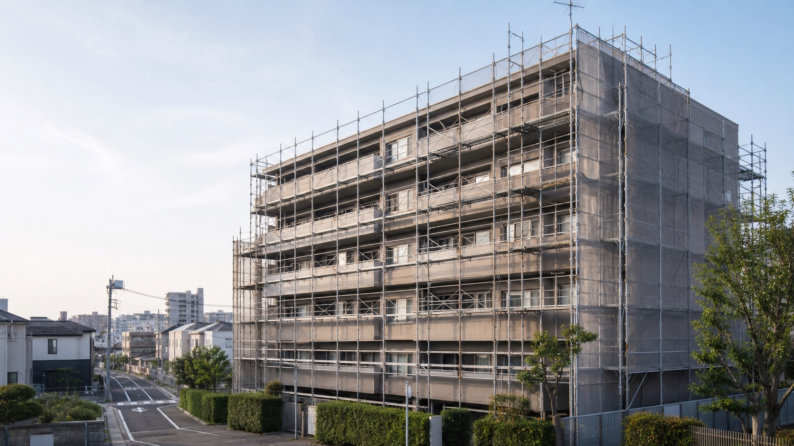
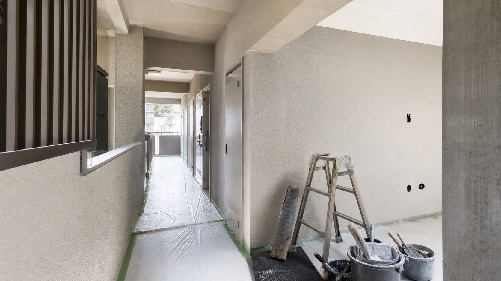
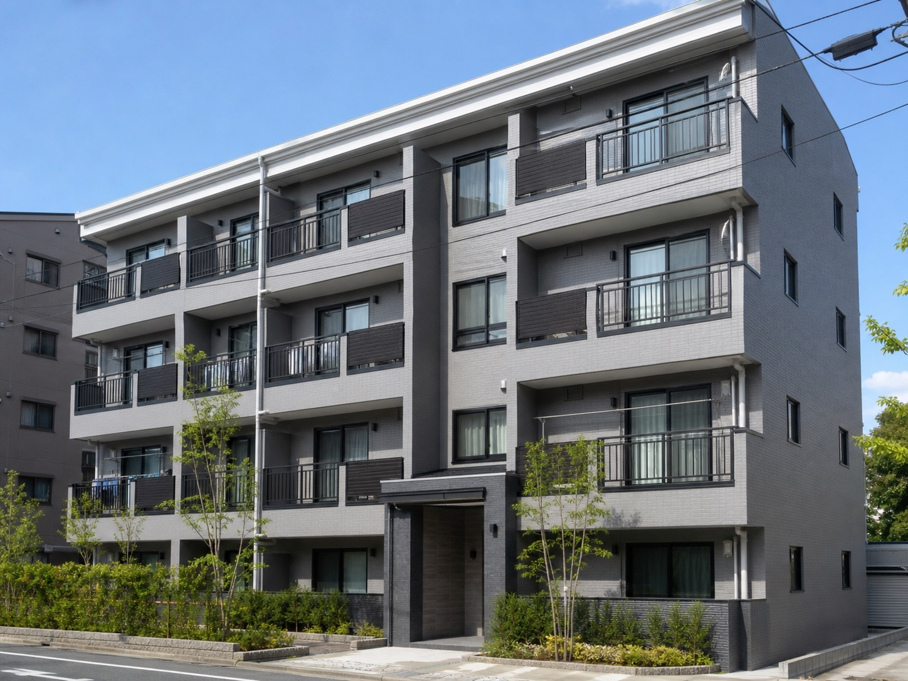
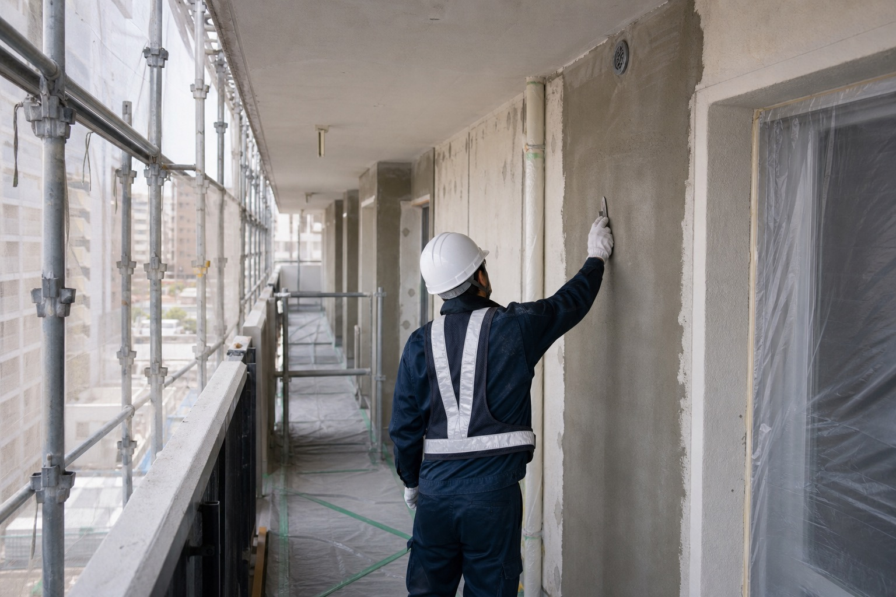
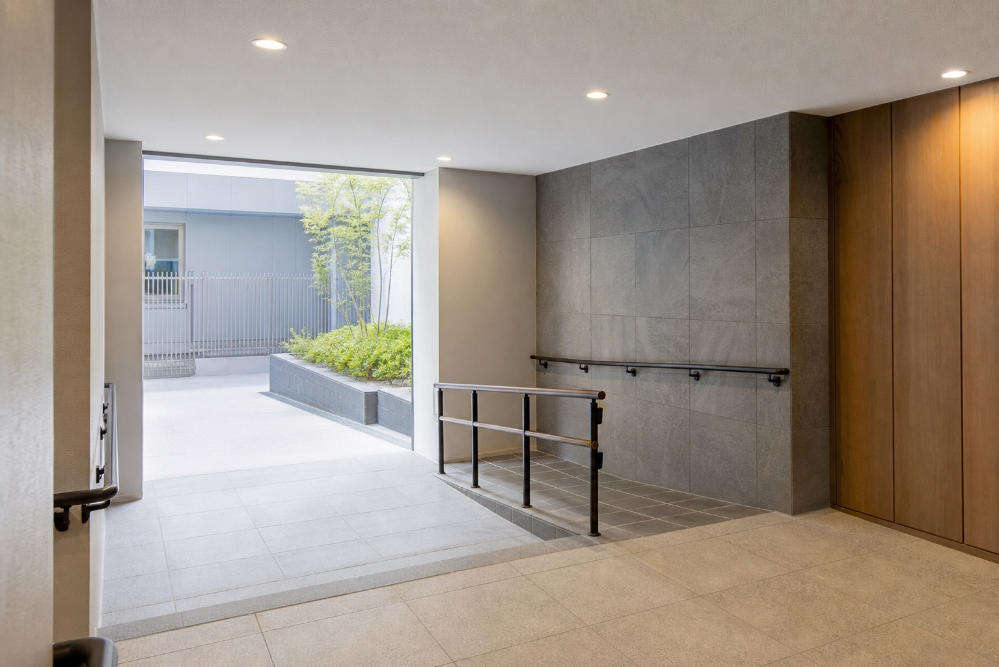

マンション・集合住宅の大規模改修
外壁、共用部、長期保全に関わる工事相談へつながる導線を想定。詳細範囲は公開前に要確認です。

仮画像仙台市青葉区 / 大規模改修工事
マンション・ビル・店舗・商業施設の大規模改修に向き合う、株式会社松崎工務店様向けのリニューアル提案デモです。
Concept
既存サイトで確認できる中心領域は、大規模改修工事です。そこで本デモでは「住宅会社の温かいLP」ではなく、管理組合・オーナー・法人担当者が安心して相談できる、建設会社らしい静かな信頼感を軸にしました。
施工写真や現場の質感を大きく見せ、問い合わせ前に「どんな工事を頼める会社か」が分かる構成へ整理しています。

Service
外壁、共用部、長期保全に関わる工事相談へつながる導線を想定。詳細範囲は公開前に要確認です。
公式サイトに掲載されている対象建物の表記を反映。法人担当者が工事概要を相談しやすい見せ方にしています。
既存サイトの問い合わせ導線を、電話・フォーム・資料相談へ自然につながる形に再設計しています。
Why Matsuzaki
Works Image
既存サイトの施工事例ページは未掲載に近いため、ここでは公開時に実写真へ差し替える前提の仮ギャラリーとして構成しています。



Contact Flow
Company
Sample Form
管理組合、オーナー、法人担当者の相談を想定したデモフォームです。実際には送信されません。